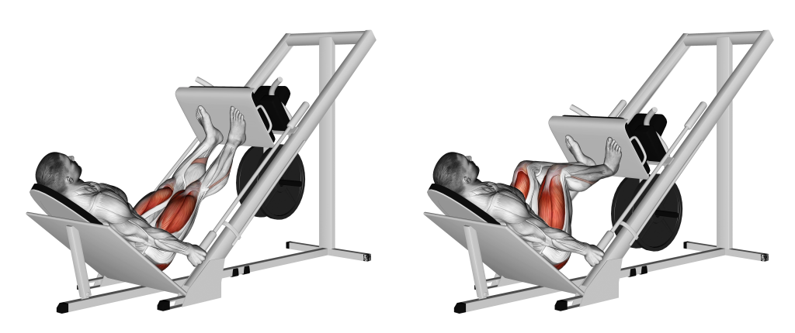

Leg Press
Go to bottom
The Leg Press is available in two forms: horizontal and 45-degree. It comprises a platform, weights or weight stacks, and locking mechanisms. This machine is designed to focus on the major lower body muscles, such as the quadriceps, hamstrings, glutes, and calves. By isolating the lower body, it minimizes stress on the upper body, making it advantageous for physical rehabilitation.

Benefits of the Leg Press
- Targets major lower body muscles: Engages quadriceps, hamstrings, glutes, and calves.
- Builds lower body strength: Increases muscular development and strength.
- Promotes muscle balance: Maintains balance between front and back of thighs.
- Suitable for rehabilitation: Reduces upper body stress while improving lower body strength.
Muscles Targeted
- Quadriceps: Located in the front of the thigh, the leg press machine effectively engages the quadriceps muscles.
- Hamstrings: Situated at the back of the thigh, the leg press machine also activates the hamstrings.
- Glutes: The gluteal muscles, including the gluteus maximus, medius, and minimus, are engaged during leg press exercises.
- Calves: The calf muscles, specifically the gastrocnemius and soleus, are activated to stabilize the lower leg during leg press movements.
Back to Home